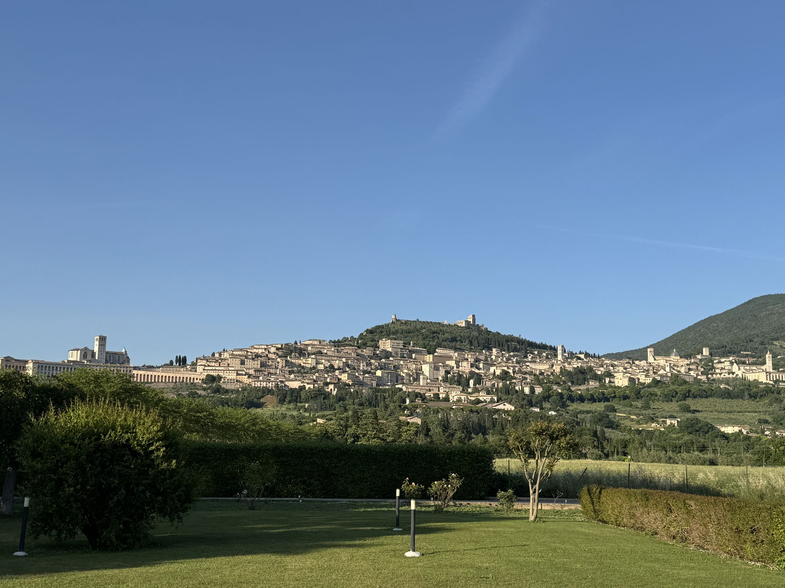
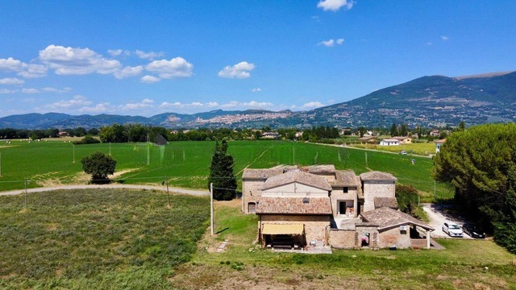
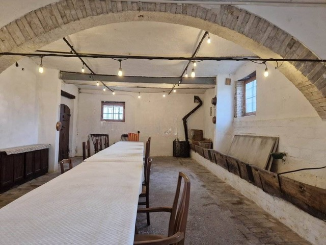
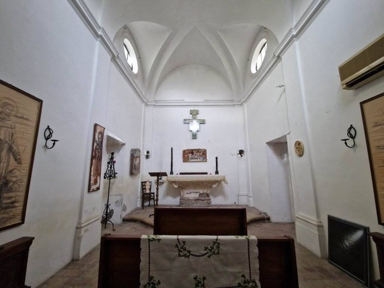
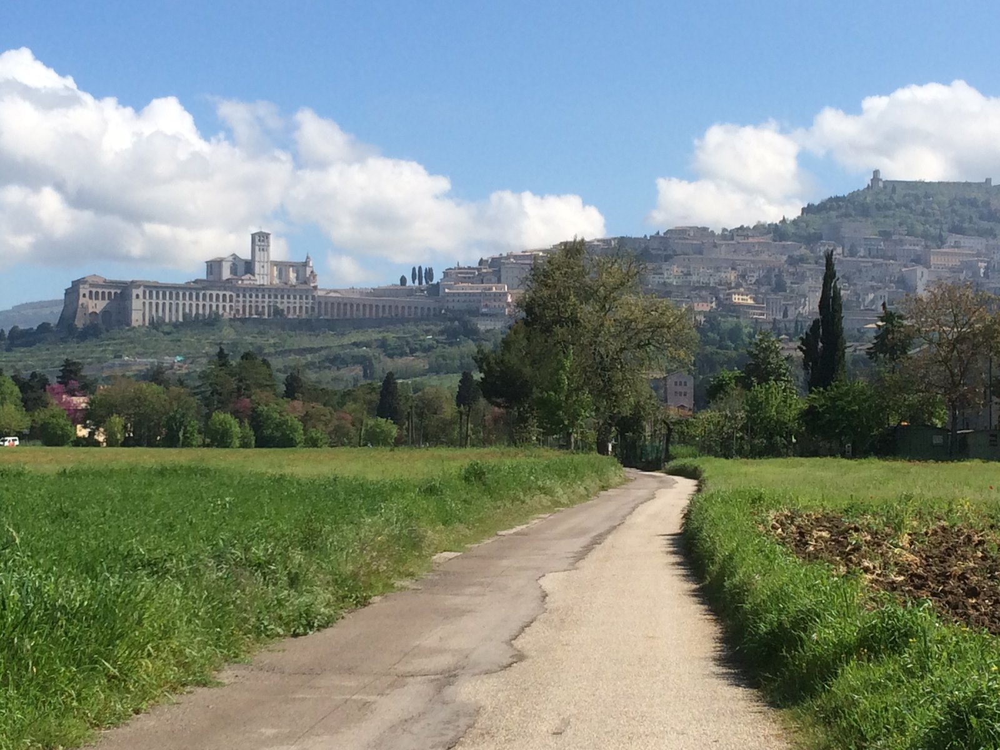

Assisi, seen from the school
In the hills of Assisi, study the traditions of the Old Masters alongside renowned painter Mark Balma. A season devoted to beauty, craftsmanship, contemplation, and community.

Mark Balma has given his life to portraiture and sacred painting in the methods of the Old Masters, from the Cathedral of Saint Paul to Women of Faith, a cycle of ten panels now in progress in Terni. At Imitatio, his own villa and studio, he opens the bottega to students.
Six weeks immersed in the traditions of the Old Masters, or a three-week intensive for those seeking a shorter experience. Drawing, tempera, oil, and the ancient art of buon fresco, studied alongside Mark Balma in Assisi.
Each discipline is ordered to beauty, goodness and truth: bellezza, bontà, verità.

You wake in the fields below Assisi, the Basilica of St. Francis on the hill.
The day belongs to the bottega, working beside the maestro. At La Tavola everyone shares one table in the vaulted refectory. In La Cappella, the old stable becoming a chapel, there is time to pray. Beyond the gate are the Umbrian roads St. Francis walked.
In Mark’s words: “It will be a restorative place for painters, writers etc. a quiet retreat with community.”
Create · Rest · Pray · Community



A season to study deeply, create faithfully, and rediscover the beauty of a life devoted to art.
Join the 2027 Interest List